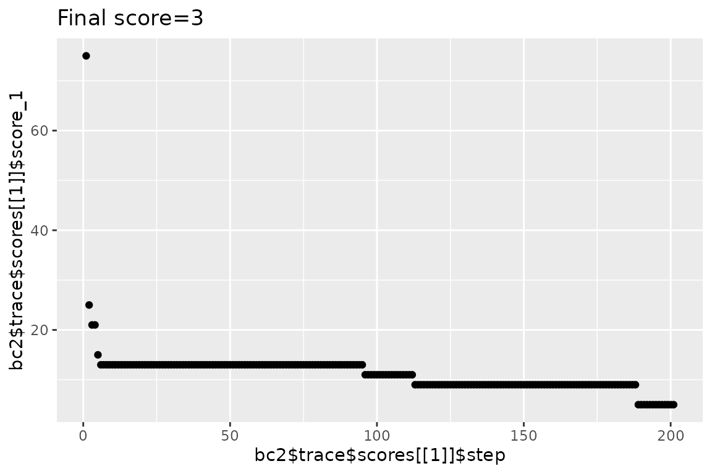

vignettes/nested_dimensions_examples.Rmd
nested_dimensions_examples.Rmd
library(designit)
library(tidyverse)
#> ── Attaching core tidyverse packages ──────────────────────── tidyverse 2.0.0 ──
#> ✔ dplyr 1.1.0 ✔ readr 2.1.4
#> ✔ forcats 1.0.0 ✔ stringr 1.5.0
#> ✔ ggplot2 3.4.1 ✔ tibble 3.2.0
#> ✔ lubridate 1.9.2 ✔ tidyr 1.3.0
#> ✔ purrr 1.0.1
#> ── Conflicts ────────────────────────────────────────── tidyverse_conflicts() ──
#> ✖ dplyr::filter() masks stats::filter()
#> ✖ dplyr::lag() masks stats::lag()
#> ℹ Use the conflicted package (<http://conflicted.r-lib.org/>) to force all conflicts to become errors
data("multi_trt_day_samples")Samples are grouped by Treatment and Collection time with the following group sizes:
| Time | Treatment | n |
|---|---|---|
| 4 | CTRL | 3 |
| 4 | SOC_TRT1 | 4 |
| 4 | SOC_TRT1_TRT2 | 3 |
| 4 | SOC_TRT1_TRT3 | 4 |
| 4 | SOC_TRT1_TRT3_TRT2 | 4 |
| 8 | SOC_TRT1 | 3 |
| 8 | SOC_TRT1_TRT2 | 3 |
| 8 | SOC_TRT1_TRT3 | 4 |
| 8 | SOC_TRT1_TRT3_TRT2 | 4 |
Total number of samples is: 32
Samples are to be blocked in batches for scRNA-seq.
# Setting up the batch container
bc <- BatchContainer$new(
dimensions = c(
batch = ceiling(nrow(multi_trt_day_samples) / 8),
run = 2, position = 4
)
)
# Add samples to container
bc$samples <- multi_trt_day_samples
# Initial random assignment
assign_in_order(bc)
# Set scoring function
bc$scoring_f <- osat_score_generator(c("batch"), c("Treatment", "Time"))
bc
#> Batch container with 32 locations and 32 samples (assigned).
#> Dimensions: batch, run, positionThe samples are distributed to 4 batches (processing days). This is
done using osat scoring on sample Treatment and
Time, optimizing by shuffling.
n_shuffle <- rep(c(32, 10, 2), c(100, 80, 20))
n_iterations <- length(n_shuffle)
set.seed(42) # should we have conventions for this?
# initial score
# bc$score()
trace <- optimize_design(
bc,
n_shuffle = n_shuffle,
max_iter = n_iterations
) # default is 10000
#> Re-defined number of swaps to 16 in swapping function.
#> Checking variances of 1-dim. score vector.
#> ... (29.235) - OK
#> Initial score: 75
#> Achieved score: 25 at iteration 1
#> Achieved score: 21 at iteration 2
#> Achieved score: 15 at iteration 4
#> Achieved score: 13 at iteration 5
#> Achieved score: 11 at iteration 95
#> Achieved score: 9 at iteration 112
#> Achieved score: 5 at iteration 188NOTE: Here the shuffling procedure is short, as it was optimized for this vignette. I practice you will have to run for a much higher number of iterations.
qplot(
x = 1:trace$n_steps, y = trace$scores, color = factor(c(32, n_shuffle)),
main = str_glue("Final score={bc$score()}"), geom = "point"
)
#> Warning: `qplot()` was deprecated in ggplot2 3.4.0.
#> This warning is displayed once every 8 hours.
#> Call `lifecycle::last_lifecycle_warnings()` to see where this warning was
#> generated.
# copy batch container for second optimization
bc2 <- bc$copy()
# Initial random assignment
assign_in_order(bc2)
n_iterations <- 200
set.seed(42) # should we have conventions for this?
trace2 <- optimize_design(
bc2,
shuffle_proposal = shuffle_with_constraints(
src = TRUE,
# batch needs to change for shuffle to be accepted
dst = .src$batch != batch
),
max_iter = n_iterations
)
#> Checking variances of 1-dim. score vector.
#> ... (26.382) - OK
#> Initial score: 75
#> Achieved score: 67 at iteration 1
#> Achieved score: 63 at iteration 2
#> Achieved score: 53 at iteration 3
#> Achieved score: 49 at iteration 4
#> Achieved score: 47 at iteration 5
#> Achieved score: 37 at iteration 6
#> Achieved score: 35 at iteration 9
#> Achieved score: 33 at iteration 11
#> Achieved score: 29 at iteration 13
#> Achieved score: 27 at iteration 14
#> Achieved score: 25 at iteration 19
#> Achieved score: 19 at iteration 20
#> Achieved score: 17 at iteration 25
#> Achieved score: 15 at iteration 36
#> Achieved score: 13 at iteration 40
#> Achieved score: 11 at iteration 49
#> Achieved score: 9 at iteration 57
#> Achieved score: 7 at iteration 79
#> Achieved score: 5 at iteration 126
#> Achieved score: 3 at iteration 180
qplot(
x = 1:trace$n_steps, y = trace2$scores, # color = factor(n_shuffle),
main = str_glue("Final score={bc2$score()}"), geom = "point"
)
bc2$get_samples(assignment = TRUE) %>%
mutate(batch = factor(batch)) %>%
ggplot(aes(x = batch, fill = Treatment, alpha = factor(Time))) +
geom_bar()
#> Warning: Using alpha for a discrete variable is not advised.NOTE: It is not possible to calculate the theoretically minimal osat score, right?
Using shuffle with constraints
Within each day there will be 2 runs (samples processed together)
with 4 samples each. For this we keep the optimized batch
and now only optimize run with constraint.
n_iterations <- 100
# assign new optimization function
bc$scoring_f <- osat_score_generator(c("run"), c("Treatment", "Time"))
# like this the optimization score is wrong because it tries to optimize across Batches.
# Possible ways to go:
# - we'd need something like c("batch", batch/run") for optimize by batch and run within batch.
# - or we add "batch/run" to the constraints somehow.
bc$score()
#> [1] 16
trace_run <- optimize_design(
bc,
shuffle_proposal = shuffle_with_constraints(
src = TRUE,
# batch remains the same and run needs to change
dst = batch == .src$batch & run != .src$run
),
max_iter = n_iterations
)
#> Checking variances of 1-dim. score vector.
#> ... (36.071) - OK
#> Initial score: 16
#> Achieved score: 14 at iteration 2
#> Achieved score: 8 at iteration 4
#> Achieved score: 6 at iteration 10
#> Achieved score: 4 at iteration 11
#> Achieved score: 2 at iteration 16